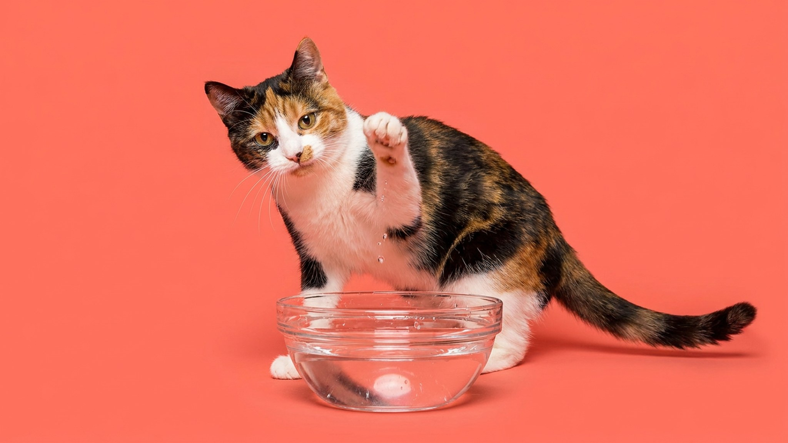

Кошка подходит к миске, лупит по воде лапой, смотрит на брызги, и только потом пьёт. Это не причуда и не игра. За жестом три физиологические причины и одна, про которую владельцы почти не думают: неудобная миска может быть именно тем, из-за чего кошка пьёт меньше нормы. Разбираем по порядку.
🐾 Хотите понять, что кошка говорит вам?
Опишите ситуацию или пришлите видео в AnimaLife — AI разберёт поведение вашего питомца и подскажет, что делать. Бесплатно, ответ за минуту.
Разобрать поведение → Разобрать в MAX →
У вас iPhone? AnimaLife есть в App Store
Кошки плохо различают предметы вблизи. Глаз заточен под движение и охоту, а не под разглядывание тихой поверхности в тридцати сантиметрах от морды. Граница между водой и краем миски для кошки размыта. Удар лапой создаёт рябь, рябь даёт ориентир, и теперь кошка точно знает, где пить.
К этому добавляются усы. У многих кошек они шире миски. Когда голова опускается к воде, усы касаются краёв и посылают в мозг сигнал дискомфорта. Удар лапой позволяет зачерпнуть воду или хотя бы проверить уровень, не засовывая морду глубоко. Это не неаккуратность, а рабочее решение под конкретную анатомию.
Дикие предки кошек пили из ручьёв и луж после дождя. Стоячая вода в природе чаще всего означает застой и риск. Движение воды сигнализирует: свежо, безопасно, пей. Домашняя кошка этот инстинкт никуда не дела. Она бьёт лапой, вода начинает двигаться, и только тогда мозг даёт добро.
Именно поэтому кошки так любят пить из-под крана. Не потому что вкуснее, а потому что всё правильно: вода течёт, блестит, движется. Инстинкт доволен.
Кошкам от природы сложно набрать суточную норму воды. Предки получали жидкость из добычи, поэтому жажда как сигнал у них слабее, чем у собак. Если миска неудобная или вода не нравится, кошка просто пьёт меньше. Хронический дефицит жидкости нагружает почки и мочевыводящую систему. Это долгосрочный риск, о котором говорят куда реже, чем стоило бы.
Что делать практически:
Сам по себе жест «лапой по воде» это норма, ничего делать не нужно. Но если поведение у миски резко изменилось: кошка стала подходить реже, бросать питьё на полпути, подолгу смотреть на воду и не пить, это стоит описать ветеринару. Внезапные изменения в питьевых привычках иногда сигнализируют о том, что животному некомфортно или что-то изменилось в самочувствии. Ветеринар разберётся.
Если вы заметили, что кошка вообще почти не пьёт из миски, попробуйте сначала поменять её на широкую и убрать подальше от кормушки. В половине случаев это решает вопрос без каких-либо других усилий.
Материал носит информационный характер и не заменяет очную консультацию ветеринара.
🐾 У вашей кошки так же?
Расскажите в AnimaLife, как ведёт себя ваш питомец, — приложение объяснит причину и даст пошаговый план. Бесплатно, без записи к специалисту.
Разобрать свой случай → Разобрать в MAX →
У вас iPhone? AnimaLife есть в App Store
🐾 Понравился разбор?
Подпишитесь на канал — каждый день разбираем по одному тревожному симптому у кошек и собак: что в пределах нормы, а когда пора к врачу. Подпишитесь, чтобы не пропустить разбор, который может спасти здоровье вашего питомца.